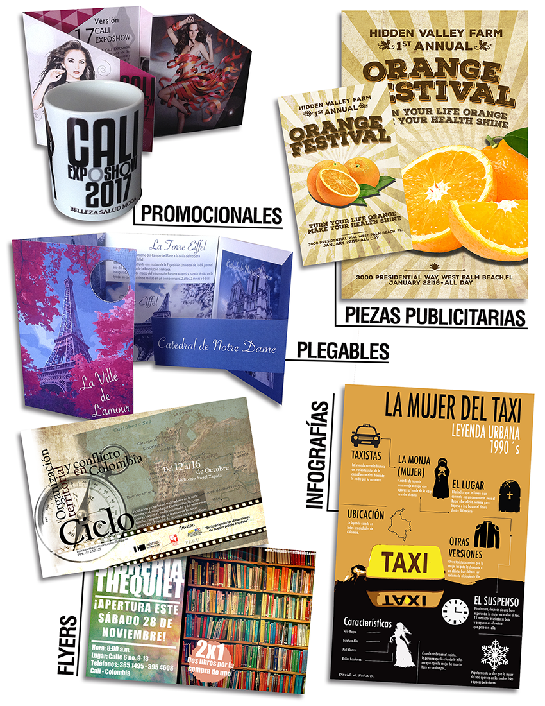

DESCRIPCIÓN DE LAS ELECTIVAS OFERTADAS
A continuación una pequeña descripción de las electivas ofertadas para el periodo 2020 - 2
Diseñando productos y servicios que importan
Diseñar, prototipar y probar soluciones que los “clientes” realmente aprecien, a través de metodologías de negocio que invitan al estudiante a aprender “haciendo”. Se acompaña al estudiante a largo del semestre académico, para que desarrolle un proyecto empresarial en el que pruebe que el producto que ha diseñado es deseable, se puede implementar y está sustentado en un modelo de negocio rentable.
Programas: {TODOS}
Creatividad Aplicada a la Ingeniería
Es una asignatura dirigida a los estudiantes de los programas de la facultad de ingeniería para complementar la línea de solución creativa de problemas, formulación de proyectos, diseño de experiencias y productos ofrecidos por el Departamento de Innovación en Ingeniería.
Programas: {TODOS}
Pitch estratégico y presentaciones efectivas
El curso taller está orientado a mejorar y potenciar la habilidades orales y discursivas de los estudiantes de diseño al momento de enfrentarse a la necesidad de capturar la atención de posibles clientes o inversores para sus proyectos o ideas innovadoras. Del mismo modo, el curso busca brindar herramientas que permitan a los estudiantes desarrollar presentaciones orales empáticas y coherentes que conecten a su interlocutor utilizando principalmente el recurso corporal como la mejor herramienta. El curso ayudara a mejorar el temor de hablar en público mejor conocido como pánico escénico, desarrollando dinámicas relacionadas con el role playing y técnicas dramáticas. Se darán a conocer las diferentes clases de pitch y las estrategias para desarrollarlos en pro de vender una idea a posibles inversores.
Programas: {TODOS}
Inteligencia emocional y creatividad
En este mundo en el cual es importante poder anticiparse a los impactos que nos trae cada día a mediano y largo plazo, la clave del éxito de las empresas está en la creatividad y la innovación. El tema central de este curso es la inteligencia emocional dentro de la creatividad, y como estos dos se ven reflejados en la innovación ya sea en una empresa, organización o emprendimiento propio, todo esto dentro del marco de los negocios, en donde el factor que le da vida a una organización, es el talento humano. A partir de esta idea, estamos hablando de personas, las cuales están llenas de emociones y sentimientos. Conocer nuestras emociones es el primer paso para mejorar e incrementar nuestra inteligencia emocional.
Programas: {TODOS}
DISEÑO DE PERSONAJES Y ANIMACIÓN 3D
Diseña, modela, anima y post-produce un personaje en 3D, Conoceremos el proceso de construcción y preparación del modelo 3D para animación partiendo del diseño, modelado, e iluminación del personaje, hasta el rigging de las extremidades, la malla y el testeo final. Posteriormente conoceremos las claves de la animación, las leyes y principios del acting, lo aplicaremos a una corta historia donde nuestro personaje es el protagonista y aprenderemos a renderizarlo. En la última parte del curso veremos la post-producción y montaje con el objetivo de tener al final del curso un corto animado.
Programas: {DMI : DIS}
DISEÑO DE BRANDING Y ESTRATEGIAS PARA MULTI-PLATAFORMAS
Brands, Creative thinking in the new landscape. Indudablemente, el panorama de la comunicación y el diseño esta cambiando, lo que representa grandes retos, pero también, infinidad de oportunidades creativamente hablando. Esto requiere repensar las esencias de las marcas y productos, y construir estrategias de comunicación en la multiplataforma. Nos adentraremos al mundo del branding de hoy. Visualizaremos el proceso de trabajo en diferentes proyectos que se construyen pensadas para ser 360º, y haremos un recorrido por los elementos principales a la hora de diseñar para este medio. Exploraremos el potencial de esta “nueva” disciplina que combina lo mejor de los dos mundos: los conocimientos del diseño visual con las posibilidades de las nuevas tecnologías.
Programas: {DMI : DIS}
DIRECCIÓN CREATIVA PARA CAMPAÑAS PUBLICITARIAS 360
(La dirección creativa gestiona la conceptualización, la idea, el mensaje y también marca los primeros pasos para la dirección de arte). Ahora, el público pasa horas y horas en la red, el consumidor cambia su manera de ver la tv y la publicidad y, además, es quien realmente manda. Se ha acabado la publicidad unidireccional, los medios son cada vez más interactivos y, sobre todo, más sociales. Los dispositivos móviles se han convertido en los principales medios de comunicación, de relación y de consumo de contenidos. Es el momento de abrir la mente para explorar otras opciones de comunicación que vayan más allá de los 30 segundos en televisión, la página de prensa y el cartel… Actualmente las campañas más creativas (tanto a nivel de realización como de estrategia) están siendo ideadas por pequeños equipos profesionales que trabajan de manera independiente, Y lo que es más importante: combinando de una manera absolutamente creativa los medios on-line y off-line.
Programas: {DMI : DIS}
HERRAMIENTAS PARA INNOVAR
El reto para todas las organizaciones no es si su mercado será sacudido por una gran innovación, sino cuándo sucederá. Por esta razón, para las empresas es cada vez más importante contar con profesionales de todas las áreas que tengan competencias desarrolladas en innovación. El Design Thinking es un conjunto de herramientas que pueden sacar al negocio de su zona de confort y propiciar las condiciones para que la innovación tenga lugar, a través de él, el curso pretende dotar a los estudiantes de una serie de recursos que les permitirán abordar proyectos de diversa índole bajo una perspectiva de innovación enfocada en la búsqueda de insights de los usuarios y en la generación de propuestas en función de estos.
Programas: {TODOS}
Diseño Gráfico para no diseñadores

Taller teórico-práctico desarrollando afiches, volantes, imágenes corporativas... teniendo en cuenta elementos del diseño gráfico como el color, diagramación y tipografía. Aprendiendo a usar Adobe Illustrator y Photoshop.
Programas: {MIP : DIS}
MODELADO 3D
Creación de modelos.
Programas: {DMI : DIS}
Construcción de Portafolios de diseño
El portafolio es la herramienta mas importante para el diseñador, hoy en día las empresas, incluso antes de la hoja de vida, esperan ver un portafolio que muestre la habilidades aplicadas a proyectos que den cuenta de cual es el perfil y nivel del diseñador. La electiva Portafolio tiene como objetivo principal la creación del portafolio interactivo y las herramientas que implican la preparación de los proyectos, diagramación, optimización y publicación del mismo tanto en Behance como en una plataforma web interactiva administrable.
Programas: {DMI : DIS}
Estrategia de Innovación
Una de las tendencias globales más fuertes hoy en día es que el modelo de negocio es rey. Estamos pasando por un momento en nuestra historia dominada por un pensamiento emprendedor donde la nueva generación digital o milenio coloca más énfasis en lograr diferenciación basada en la innovación en modelos de negocio únicos, estratégicos y diferenciadores que en productos per se. Viejos productos presentados en formas únicas de resolver problemas nuevos. Esta tendencia mundial de desarrollar CANVAS es indispensable para un estudiante egresado de una maestría de Gestión de Innovación, el fin del curso es desarrollar objetivos y estrategias de innovación para la organización con un impacto local y/o global mediante el reconocimiento, análisis y comprensión del entorno competitivo, las tendencias mundiales en negocios, estrategia e innovación.
Programas: {TODOS}
Innovación en servicios
Electiva que busca mediante el trabajo multidisciplinario de los estudiantes comprender la lógica de ofertas de servicios. Basados en una metodología de "service design thinking" se aprenderá a identificar las estructuras de un servicio, descubrir oportunidades de innovación desde los servicios e implementar planes de negocio basados en los mismos.
Programas: {TODOS}
Descubre tu lado creativo
60% de los CEO´s de las compañías más grandes consideran que la creatividad es la habilidad más importante para tener éxito en la vida y en los negocios.* La creatividad no es una habilidad reservada para artistas o publicistas, la creatividad se puede desarrollar. En este curso los estudiantes desarrollarán su “confianza y potencial” creativo, mejorarán su habilidad para solucionar problemas de manera creativa y aplicarán herramientas, técnicas y procesos para de manera “deliberada” fomentar la creatividad y solucionar problemas creativamente. Como resultado, podrán ser líderes de cambio en sus equipos de trabajo y en su futuro profesional.
Programas: {TODOS}
Post Producción Fotográfica
El alumno encontrara la relación entre imagen y postproducción aprendiendo la importancia de esta en la comunicación moderna, sacando máximo partido a las facilidades que entrega la era de lo digital para la obtención de óptimos resultados después de la toma fotográfica. El curso busca desarrollar el conocimiento y las habilidades necesarias para la producción y selección de imágenes óptimas para los procesos de promoción de productos y creación de contextos.
Programas: {DMI : DIS : MIP}
Diseño Interior I
Curso Teórico-Práctico centrado en el Diseño Interior y el desarrollo de mobiliario, los espacios interiores y su relación con las actividades del hombre, desde una perspectiva estética y funcional. Al finalizar el curso de Diseño Interior I el estudiante estará en capacidad de plantear proyectos de mobiliario y espacio interior, desde los aspectos conceptuales, con proyección clara para ser producidos y dado el caso comercializarlos.
Programas: {DIS}
Ingeniería de Empaques
En un entorno tan cambiante y tan competitivo como el actual, el Diseño de Empaque es fundamental para garantizar la supervivencia de cualquier compañía, sin importar su tamaño, pues los materiales de empaque impactan los costos de producción en un 30% (valor promedio). Adicionalmente, las condiciones logísticas de nuestro país – carreteras y manejo de los productos a lo largo de la cadena de suministro- son bastante agresivas con el producto terminado, generando averías y devoluciones que llegan a niveles tan altos como un 40% a 50%, mientras en los países desarrollados estos niveles solo llegan al 1% o 2% obviamente asociado también con el nivel de tecnificación presente en dichos países. Es así como el curso de Diseño de Empaque entra a llenar un vacío en cuanto a criterios de diseño formales, de diseño para manufactura y funcionalidad del empaque a lo largo de toda la cadena de suministro, sin olvidar la estética y teniendo en cuenta una metodología formal que permita ejecutar un proyecto de la manera más efectiva y eficiente posible.
Programas: {DIS : IND}
Fotografía de Producto
Curso taller que se basa en el conocimiento a profundidad de los antecedentes de la invención de a fotografía y de los iconos de la historia de la misma. Se hace un estudio a profundidad de la cámara digital llegando al manejo y conocimiento de los programas de edición fotográfica. Reconocer el valor histórico, cultural, artístico, económico y social de la fotografía. Apropiarse de la herramienta de la fotografía desde el conocimiento básico de una cámara digital y sus partes. Entender el lenguaje y la composición, y poder construir imágenes expresivas, con un contenido simbólico, cargado de subjetividad y expresión. Y darle a la fotografía el uso adecuado, sabiendo aplicar su saber en principios básicos de la construcción de piezas de comunicación visual.
Programas: {DIS : MIP}
Contacto
Oficina del Departamento de Diseño || cmurillo@icesi.edu.co